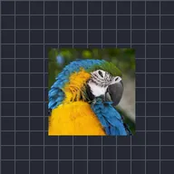

Willekeurige jitter

Laat de laag willekeurig heen en weer springen langs een hoek.
Instellingen
| Instelling | Type | Bereik | Standaard |
|---|---|---|---|
| Hoek | Hoek | -3600° tot 3600° | 45° |
| Frequentie | Getal | 1 tot 60 | 30 |
| Uitslag | Getal | 1 tot 2000 | 25 |
| Seed | Getal | 0 tot 1 | 0 |
| Speling | Getal | 0% tot 100% | 0% |
| Z-jitter | Getal | 0 tot 2000 | 0 |